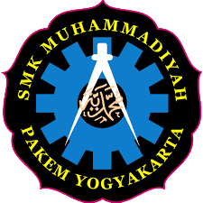
Sekolah Pusat KeunggulanSekolah Unggul, Kreatif dan Berkemajuan
Selamat datang di website SMK Muhammadiyah Pakem. Kami adalah Sekolah Pusat Keunggulan yang mengusung konsep Pesantren Vokasi: memadukan keterampilan industri, teknologi, dan nilai-nilai Islam berkemajuan. Mari belajar, berkarya dan meraih prestasi bersama kami.
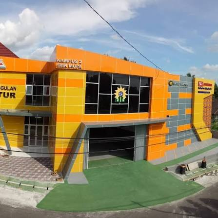
Kami berkomitmen menghadirkan pendidikan kejuruan yang bermutu: siswa terampil di bidangnya, kuat karakter, dan siap bersaing di dunia usaha dan dunia industri.
Identitas singkat: SMK Muhammadiyah Pakem berlokasi di Jl. Pakem - Turi No.23, Pakembinangun, Kec. Pakem, Kab. Sleman, Daerah Istimewa Yogyakarta. Semboyan sekolah: "Bahagia Bersama".
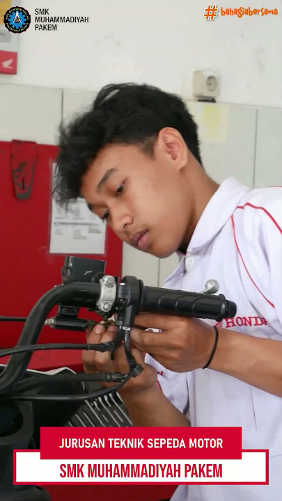
Perawatan dan perbaikan mesin, sasis, serta kelistrikan sepeda motor.
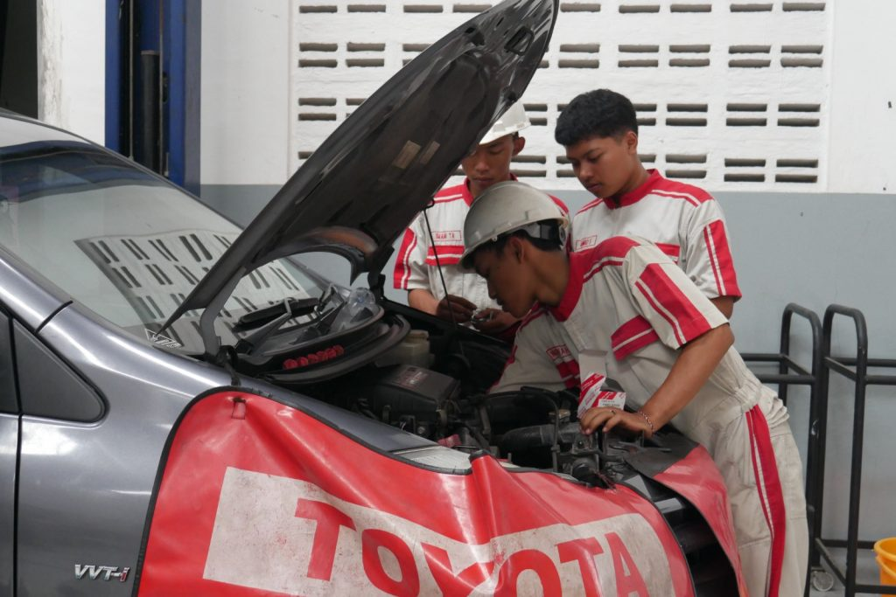
Perawatan mesin, sasis, pemindah tenaga, dan kelistrikan mobil.
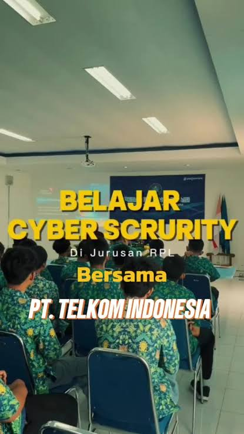
Pembuatan website, aplikasi, game, dan cyber security.
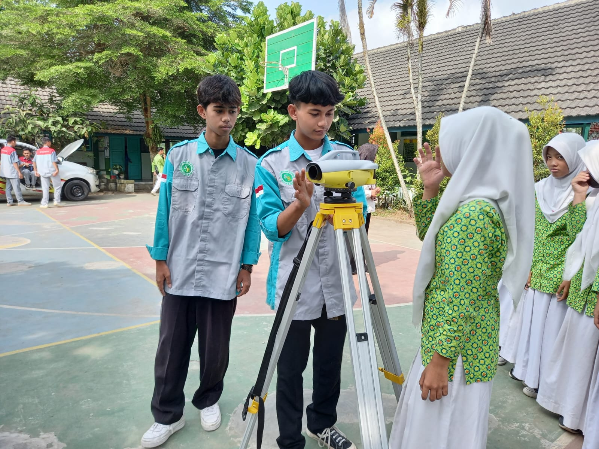
Perencanaan, pelaksanaan pembangunan, dan perbaikan gedung.
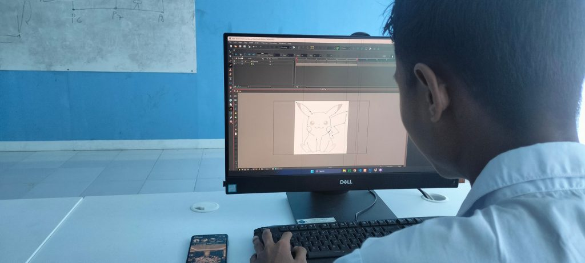
Teknik pembuatan animasi 2D dan 3D, film, serta game.
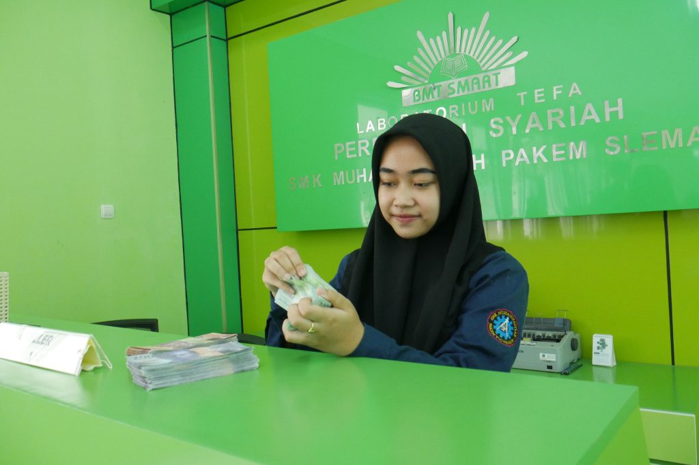
Keuangan dan perbankan yang berlandaskan prinsip syariah Islam.
Siswa belajar memasarkan jasa bengkel secara digital bersama mitra industri.
Sekolah memperkuat pelestarian budaya Daerah Istimewa Yogyakarta.
Siswa mengenal dunia kerja secara langsung pada 19–23 Oktober 2026.
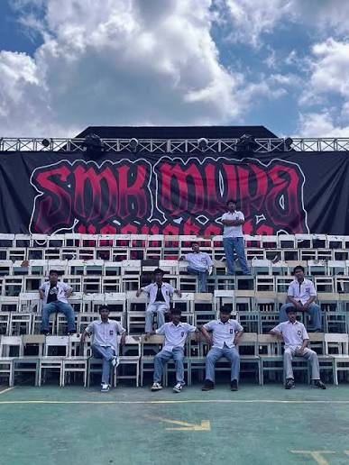
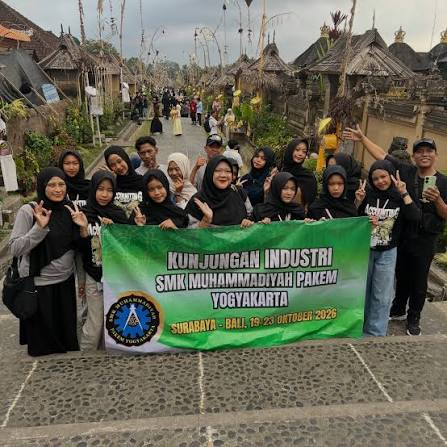
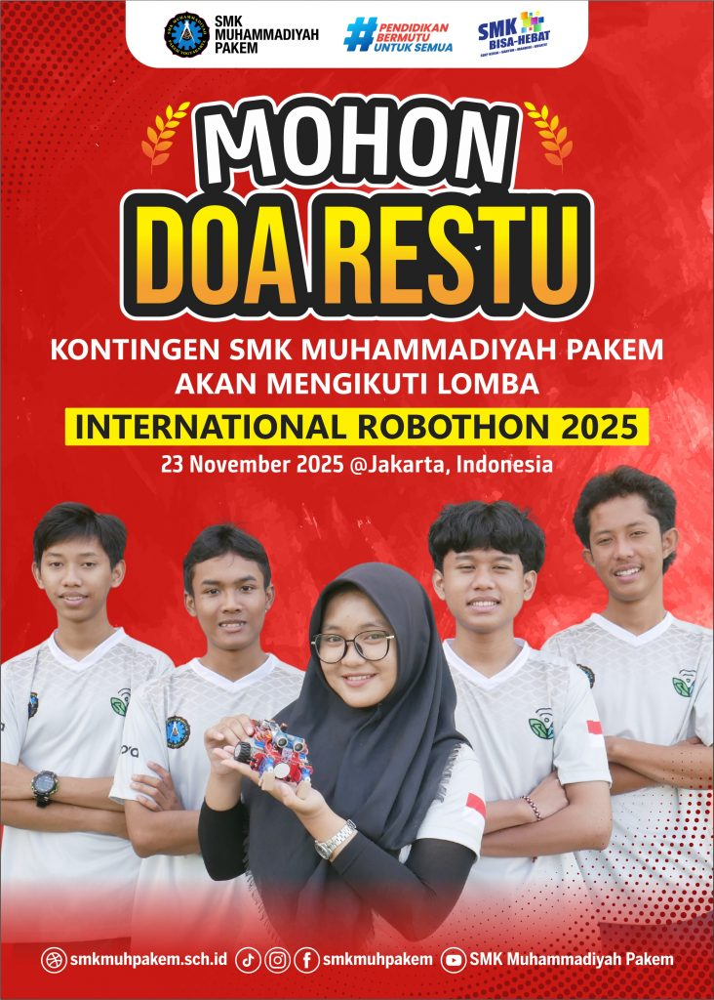
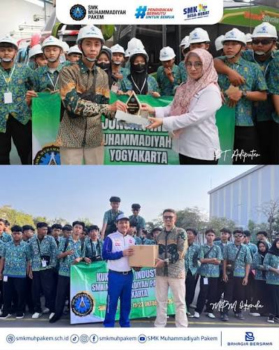
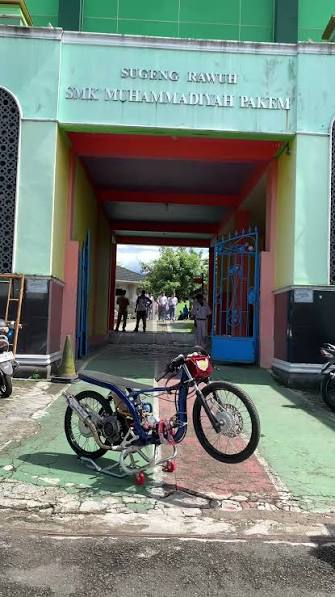
📍 Alamat: Jl. Pakem - Turi No.23, Pakembinangun, Kec. Pakem, Kab. Sleman, Yogyakarta
📧 Email: ................................
📞 Telepon: 085865611145
📱 Instagram / TikTok: @smkmuhpakem